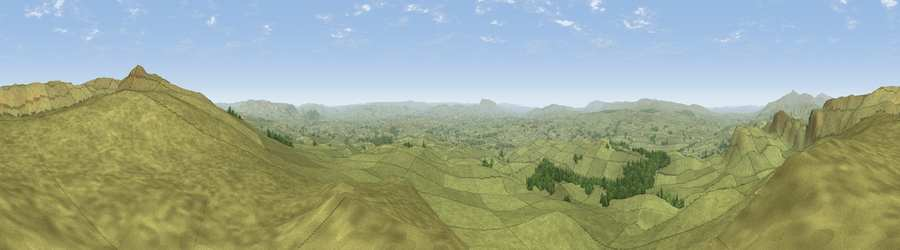

Viewpoint near Settle
#3491 in England · top 3% of its area beats it · near SettleWhere it is
The exact computed spot (SD 85275 62525). Click the marker for map links.
The view, rendered

A 360° render of this exact spot computed from the terrain model, tree cover and land cover — summer colours, afternoon light, calibrated against photographs of famous viewpoints. Real trees, hedges and buildings will differ in detail.
The panorama
Grey silhouette: terrain skyline in each direction (720 bearings, Earth curvature and refraction included). Dashed green: skyline with trees (+15 m) and buildings (+8 m) as obstacles. Blue strip: how far the ground is visible on each bearing.
Where the view opens
Wedge length = distance to the farthest visible ground on that bearing (vegetation-aware). Rings at 10, 25 and 50 km.
What fills the view
96% grassland · 4% woodland
Angular shares of the visible panorama (visual magnitude), not map area. Landscape diversity 0.08 (0–1 Shannon).
Key numbers
More beautiful places nearby
The staircase of upgrades: each row has a higher view potential than everything closer. Driving times are estimates from straight-line distance, calibrated against real road routing — check an actual route before setting out.
| Place | Direction | Drive | Score |
|---|---|---|---|
| Rye Loaf Hill | NE · 1 km | ~4 min | 73.9 |
| Kirkby Fell | ENE · 2 km | ~6 min | 74.5 |
| Pen-y-ghent | N · 11 km | ~21 min | 75.8 |
| Little Ingleborough | NW · 16 km | ~28 min | 78.8 |
| Viewpoint near Ingleton | NW · 16 km | ~29 min | 79.5 |
| Whernside | NNW · 22 km | ~37 min | 79.9 |
| Warton Crag | WNW · 37 km | ~56 min | 83.2 |
| Viewpoint near Grange-over-Sands | WNW · 48 km | ~69 min | 83.4 |
54.05846, -2.22644 · source: screening · position refined by local search. Computed location — check access rights before visiting.